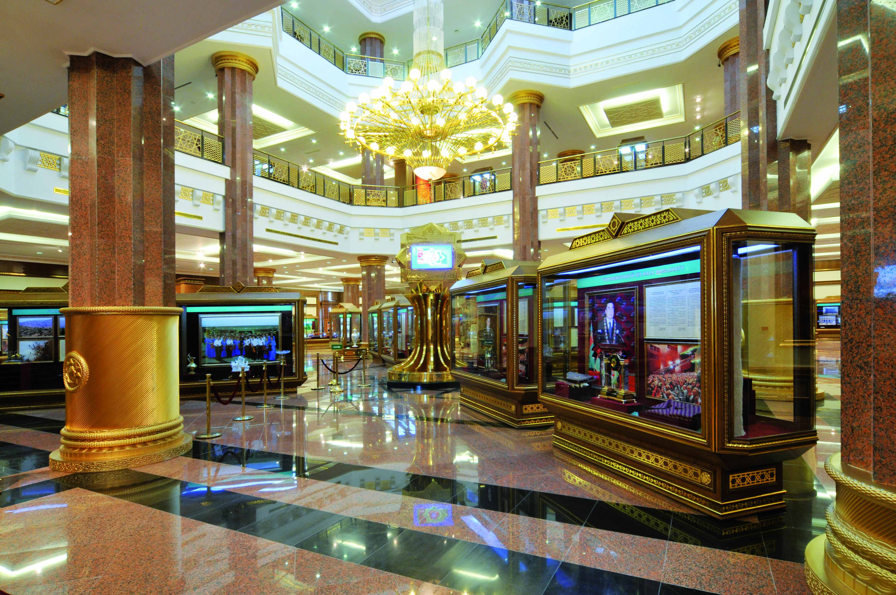
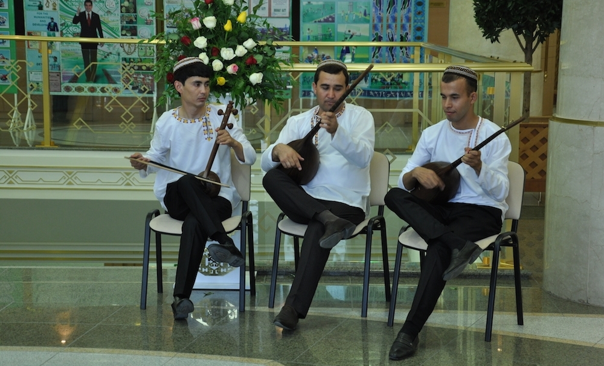
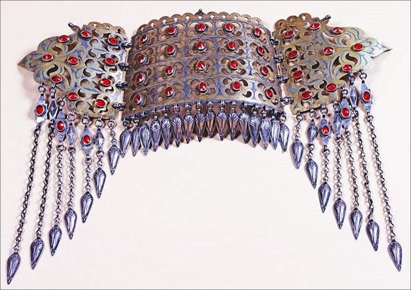
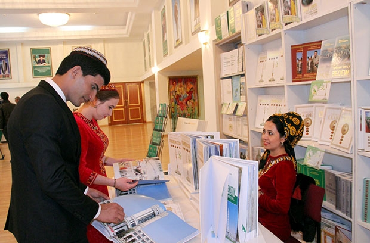

Туркменистан имеет богатое культурное наследие, создававшееся в течение тысячелетий. Об этом, в частности, свидетельствуют ведущиеся в течение многих лет раскопки Нисы (18 км от Ашхабада) – столицы древнего Парфянского государства, которое существовало на рубеже I тыс. до н.э. – I тыс. н.э. Здесь сохранились остатки городских кварталов, храмов, дворцов. При раскопках Нисы были обнаружены изящные ритоны (кубки в виде рога) из слоновой кости, скульптуры из глины и камня, монеты, архивные записи на глиняных дощечках. Эти находки имеют мировое значение.
Культура туркмен несколько отличается от культурных традиций соседских мусульманских ценральноазиатских государств. Дело в том, что предки туркмен – кочевые племена, тогда как земли современного Таджикистана и Узбекистана населяли оседлые племена земледельцев. Эта особенность отразилась и на таком аспекте жизни туркмен, как культурное развитие. Основные культурные вехи народов Туркменистана относятся к традициям тюркской народности огузов.
Последние восходят к доисламскому периоду. Традиции огузов нашли отражение в литературе, музыке, фольклоре туркмен. Наиболее известным произведением этого периода является национальный эпос огузов Огуз-намэ, также принадлежащий культурному наследию туркмен, азербайджанцев и турков. Он передавался устно из поколения в поколение и был записан только в середине XVI в. Еще один эпический памятник поэма «Китаби Деде Коркуд», в которой нашли отражение доисламская племенная культура огузов и влияние ислама в XI–XII вв. Эпические поэмы исполнялись народными певцами-сказителями.
Становление советского изобразительного искусства Туркмении связано с творчеством Р.М.Мазеля и А.П.Владычука, по инициативе которых в 1920 г. в Ашхабаде была организована «Ударная школа искусств Востока». В 20-х гг. искусство Туркмении развивалось под знаком поисков национального стиля. В живописи закладывались основы социально-тематической картины, портрета-типа (Б.Нурали, С.Н.Бегляров). Активную роль в общественно-политической жизни Туркмении играла графика (Р.В.Гершаник, В.Я.Демиденков, Н.И.Костенко, М.П.Федура и др.). Был создан один из первых советских монументов в Средней Азии – памятник В.И.Ленину в Ашхабаде (1927, архитектор А.А.Карелин, скульптор Е.Р.Трипольская, керамист Н.И.Назаров). В 30-х гг. главной задачей туркменских художников стало отражение конкретного содержания жизни на основе метода социалистического реализма (С.Н.Бегляров, Б.Нурали, И.И.Черинько, Ф.Бабиков, Ю.П.Данешвар). В годы Великой Отечественной войны 1941–45-м ведущим стало агитационное искусство («Окна ТуркменТАГа»). В послевоенные годы дальнейшее развитие в живописи Туркмении получили тематическая и бытовая картина (Е.М.Адамова), портрет, пейзаж. Искусству Туркмении 50–60-х гг. свойственно стремление к глубокой оценке событий современности, к отражению особенностей общественного развития Туркмении (И.Клычев, Г.Я.Брусенцов, А.Хаджиев, А.Кулиев, А.Т.Щетинин). 60–80-е гг. знаменательны сложением и развитием национальной художественной школы Туркмении на основе объединения художественных сил республики, овладения методом социалистического реализма, творческого освоения национального наследия. Художники ищут темы высокого гражданственного содержания, композиции отличаются четкостью, ясностью ритмов, остротой линии, пластической выразительностью яркой цветовой гаммы (И.Клычев, А. и Ч.Амангельдыевы, С.Г.Бабиков, М.Мамедов, Д.Байрамов). Развиваются театрально-декорационная живопись (Е.Л.Кордыш, Ш.Акмухамедов, Я.К.Аннануров), монументально-декоративное искусство (Д.Джумадурды, К.Ярмамедов). Народное и декоративно-прикладное искусство Туркмении в советское время получает дальнейшее развитие: безворсовое ковроткачество, изготовление узорных кошм и тканей, изделий из кожи, вязание, вышивка, ювелирное дело. Наряду с возрождением классических типов орнаментальных ворсовых ковров ткутся портретные и сюжетно-тематические ковры.
Национальный музей имени великого Сапармурата Туркменбаши. Экспозиция музея составляет более 600 тысяч предметов основного вспомогательного фондов. Это экспонаты и документы, рассказывающие об истории и достижениях независимого нейтрального Туркменистана. Музей располагает значительной коллекцией старинных туркменских ковров, яркими образцами национальной одежды и тканей, традиционным бытовым инвентарем, изделиями из драгоценных металлов, оружием, орденами, медалями, большим количеством бесценных археологических материалов, а также различными историческими документами. В фойе музея размещается зал Независимости, где собрана коллекция сувениров, преподнесенных Президенту Туркменистана. На втором этаже расположена смотровая площадка, с которой посетители могут оценить по достоинству ковер-гигант «Туркменбаши».
Музей национальных ценностей Туркменистана размещен в мемориальном комплексе страны – Монументе Независимости. Экспозиция музея состоит из нескольких тематических разделов: туркменские ювелирные изделия, искусство туркменских оружейников, этнография, нумизматика. Коллекция оружия – одна из самых впечатляющих музейных экспозиций. Ее украшают произведения известных туркменских художников, запечатлевших на своих полотнах героическую борьбу народа за независимость. Музей туркменского ковра имени Героя Туркменистана Гурбансолтан эдже – богатая коллекция ковров удивительной красоты, где ни один экспонат не похож на другой. Отличительной особенностью туркменского ковра являются его высокая плотность, искусная техника исполнения, качество, богатая орнаментация, насчитывающая около двух тысяч традиционных узоров. В музее имеется ткацкая мастерская и мастерская по реставрации ковров.
Музей изобразительных искусств Туркменистана вмещает в себя 11 выставочных залов. В «Зале Независимости» представлены произведения изобразительных искусств, ставшие художественным воплощением истории независимого Туркменского государства, всех происходящих в стране великих перемен. «Зал современного туркменского искусства» – собрание великолепных полотен, запечатлевших образы легендарных исторических личностей туркмен, наиболее значимые события в летописи древнего туркменского народа. На втором этаже расположился «Зал западноевропейской живописи», богатая коллекция которого является гордостью национального художественного фонда. Здесь широко представлены ведущие школы, направления и стили живописи стран Западной Европы от эпохи возрождения до XIX века. Музей оснащен современными реставрационными мастерскими, лабораториями, специализированным хранилищем, обширной библиотекой и удобным залом для проведения встреч и конференций.
Геолого-минералогический музей Туркменского государственного университета имени Махтумкули состоит из двух секторов. В первом представлены экспозиции, которые отражают горные породы на территории Туркменистана, полезные ископаемые главнейших месторождений страны, уникальные окаменелости разных эпох. В экспозиции этого раздела около 400 экспонатов, наглядно иллюстрирующих последовательные этапы процесса эволюции. Второй раздел музея – раздел минералогии – представлен оригинальными образцами горных пород и минералов. Он включает сведения о формах нахождения минералов в природе. Помимо основной экспозиции, представлены девять стендов, рассказывающих обо всех природных заповедниках Туркменистана.
Национальный музей Туркменистана «Ак бугдай», расположенный в Анау, – зримый символ таланта и трудолюбия туркменского народа, его неизменной верности своим священным традициям, уходящим корнями вглубь тысячелетий. Проектная площадь музея – 32 тысячи квадратных метров, включая более 18 тысяч квадратных метров садово-парковой зоны, раскинувшейся почти до подножий седого Копетдага. Общая высота трехэтажного здания составляет 21 метр. Над ним, устремившись высоко в небо, возвышается сверкающий в солнечных лучах золотой пшеничный колос в обрамлении двухъярусного венца из колосьев меньшего размера. Первый раздел экспозиции посвящен находкам американской археологической экспедиции в Туркменистане под руководством профессора Рафаэля Пампелли. Второй раздел экспозиции рассказывает о непреходящем всемирном значении анауской цивилизации. Самым главным экспонатом музейной коллекции являются чудом сохранившиеся зерна акбугдая. В нижнем этаже здания разместились: конференц-зал на 200 мест, рабочие кабинеты, хранилище, телекоммуникационный и информационный центры.
Первый компакт-диск туркменского ансамбля «Ашхабад», выпущенный в 1993 году фирмой легендарного Питера Гэбриэла, назывался «Ашхабад, город любви». В тюркских языках действительно есть слово «ашк» – «любовь». Правда, объятия любви в самой южной среднеазиатской республике бывшего СССР отличались такой страстью, что в них легко можно было задохнуться: музыкантам порой без всякого повода запрещали выступать публично, и все потому, что в новое время у туркмен практически не было своей государственности, «двора» – соответственно, не развивалась и придворная (называя вещи своими именами) профессиональная музыка – аналог европейской классики.
Культовой музыки ислам не предполагает, так что музыканты не могли претендовать на роль всеобщих любимцев, им отводилась роль «обслуживающего персонала» – в первую очередь на пышных свадебных церемониях. Но зато – при отсутствии прочных классических традиций – прикладной жанр оказалось легче сдвинуть с мертвой точки, именно поэтому туркменские музыканты легко вошли в мир современной мировой музыки. Этнографы спорят, встречались ли в народной туркменской музыке ударные инструменты, а тем временем соло перкуссиониста Хакберды Алламурадова, как и в джазе или рок-музыке, неизменно становятся гвоздем концертных программ ансамбля. Европейские инструменты типа аккордеона привились на Востоке, но, как правило, возможности их используются в лучшем случае только наполовину. Курбану Курбанову как раз и выпадает труднейшая роль – суметь так «подкрасить» европейскими аккордами восточные мелодии, чтобы это не противоречило их содержанию. Кларнет давно уже заменяет на Востоке зурну (или туркменский гопуз), но Сабир Ризаев идет еще дальше – он блестяще играет не только на звонком кларнете, но и на «ностальгическом» сопрано-саксофоне и на тюркско-балканской помеси того и другого – тарагате. И, наконец, скрипач Гасан Мамедов мог бы легко сделать карьеру респектабельного джазмена. В мире уже успели позабыть поп-музыку, процветавшую между двумя мировыми войнами, но она сохранилась на Востоке. Мировая музыка шла двумя путями: по «вертикальной» модели (европейская гармония) и «горизонтальной» (азиатская монодия). В советские времена среднеазиатским «мелодистам» (слово это произносилось только с иронией) европейскую гармонизацию навязывали чуть ли не в приказном порядке. Но встреча двух культур все-таки произошла, правда, там, где того меньше всего ждали – в быту, на эстраде, в кино. В записи первого диска «Ашхабада» даже приняла участие в качестве альтистки Джослин Пук – известный композитор-авангардист, автор музыки к фильму Стенли Кубрика «Широко закрытые глаза». Роль кульминации на диске выполняет композиция «Пути и возвращение истины» – лучшее доказательство того, что «микс», даже самый просчитанный, всегда интереснее и значительнее простой суммы отдельных слагаемых. Сама вышивка выполняется по особой методике, которую не найти больше нигде в мире. Она отличается своим узором, своей прочностью и долговечностью. И сегодня очень популярно среди молодежи использовать вышивку в одежде, как для мужчин и женщин, так и для детей. Вышивка на традиционной одежде выполняется вручную с узорами, которые отражают историю туркменского народа и символизируют природу и климат Туркменистана.
Ювелирные изделия , созданные туркменскими мастерами-зергерами, являются одним из ярчайших проявлений культуры туркменского народа. Изысканные украшения – броши, браслеты, кольца, кулоны, серьги - это неотъемлемая часть национального женского костюма. Изделия туркменских зергеров вошли в экспозиции лучших музейных собраний по всему миру. Переняв опыт предыдущих поколений, современные мастера продолжают совершенствовать и творчески развивать эти традиции, их изящество и тонкость неизменно вызывают всеобщее восхищение.
Национальное декоративно-прикладное искусство туркменских зергеров своими корнями уходит в глубь тысячелетий и неразрывно связано с ювелирным искусством Востока, которое развивалось в условиях широкого культурного обмена между различными народами. Сегодня традиции туркменского ювелирного искусства представляют большой интерес для дизайнеров и ювелиров многих стран. Изделия туркменских зергеров, отличающиеся красотой и гармонией, пленяют благородным блеском серебра и позолоты, мерцанием оникса, оттенками бирюзы и полированного сердолика. Они привлекают своей самобытностью, симметричностью узоров и уникальными чертами национального орнамента. Среди изделий туркменских ювелиров особое место занимают женские национальные украшения: брошь гульяка, подвеска асык, серьги и браслеты, украшенные сердоликом, филигранью, или затейливым чеканным узором, они – словно поэма из металла и драгоценных камней. Уникальная коллекция женских ювелирных украшений хранится в Государственном музее Государственного культурного центра Туркменистана. Ювелирное искусство зергеров не только является частью материальной культуры туркменского народа и его национальным достоянием, но и свидетельствует о больших творческих возможностях, духовных горизонтах нашего талантливого народа. Сегодня туркменские ювелиры создают подлинно национальные произведения, продолжая традиции мастеров прошлого и внося свой вклад в развитие современного декоративно-прикладного искусства.
После того как Союз Советских Социалистических Республик распался в начале девяностых годов, Туркменистану досталось наследство от советского кинематографа в виде «Туркменфильма». Естественно, съемочные процессы, которые были запланированы на тот момент, были остановлены, а сами картины заморожены до лучших времен.
Сегодняшний синематограф страны Туркменбаши уже не жалкая копия бывшего советского искусства. В стране появляются все новые и новые талантливые режиссеры и сценаристы. Нынешнюю ситуацию со съемкой кино в Туркменистане можно пока охарактеризовать следующим образом: туркмены ищут свой путь.
И, к слову, у них это получается. Современное кинематографическое искусство страны интересно не только самим его жителям, но именитым участникам международных кинофестивалей. Благодаря содействию и поддержке президента Туркменистана Гурбангулы Бердымухамедова, «Туркменфильм» получил новый ультрасовременный комплекс для съемок.
Старейшие, но при этом не менее любимые кинотеатры Ашхабада «Ватан» и «Туркменистан» реконструируются. Покупается новейшая техника для проката самых технологичных новинок кино. Вскоре кинотеатры распахнут свои двери, и благодарные зрители смогут оценить не только российский кинематограф, работы европейских мастеров, а также и своих туркменских режиссеров.
После принятия ислама народами в Центральной Азии получила распространение арабская письменность. Однако туркменская поэзия использовала чагатайский язык (близкий к персидскому), широко распространенный в Центральной Азии. Именно на чагатайском языке развивалась туркменская литература. На нем писали великие туркменские поэты XVIII века. Национальным туркменским поэтом является Махтумкули (1730–1880-е). До Махтумкули туркменская поэзия была очень похожа на персидскую, то есть выражена в форме суфийских философских трактатов в поэтической форме. Махтумкули и его последователи начали творить, выходя за узкие рамки условностей, свойственных персидской поэзии. При этом широко использовались мотивы туркменской народной поэзии и ее эпические традиции. Продолжателями наследия Махтумкули считаются Сеитназар Сеиди (1775–1836) и Курбандурды Зелили (1780–1836).
С середины XIX века заметно ослабевает влияние суфизма, ранее преобладавшего в туркменской литературе. И произведения туркменских поэтов приобретают политическую окраску. После присоединения Туркменистана к Российской империи в 1870–1890-х годах ведущее место в поэзии занимает социальная и политическая сатира. Туркменская художественная проза и драматургия начали развиваться лишь в советское время. Литература того периода восхваляла завоевания социализма: права женщин, коллективизацию сельского хозяйства, а позднее – победу советского народа во II Мировой войне. Среди туркменских писателей советского периода выделялся поэт, романист и драматург Берды Кербабаев (1894–1974).